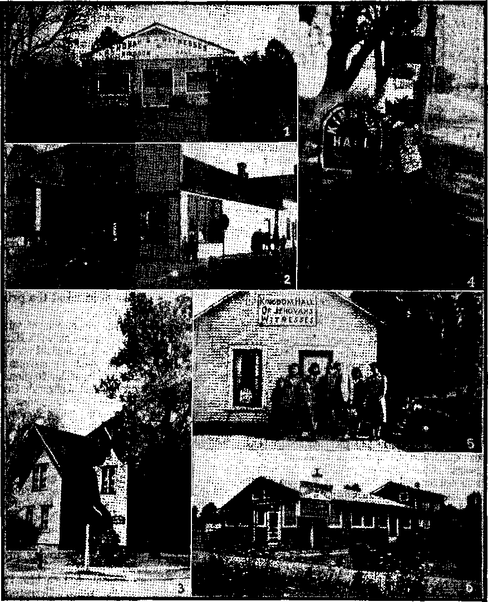

The Pope’s Friendship for America
Catholics to Study the Scriptures
■Hierarchy Stand Against Freedom
Catholic Bishops Backed Hitler
Seditious Priests and Nuns Sentenced
Burden of Guilt on Hierarchy,
In and About the National Capital
'‘Men [and Women] Wondered At”
The Shepherd Using His "Other Sheep”
“Thy Word Is Truth”
250 Newspapers Teaching Astrology
What Is Holding Baek Production?
Published every other Wednesday by WATCHTOWER BIBLE AND TRACT SOCIETY, INC. 117 Adams St,. Brooklyn 1, N. Y.. U. S. A. OFFICERS President N. H. Knorr
Secretary W. K. Van Araburgh
Editor Clayton J, Wood worth
Five Cents a Copy $1 a year in the United States $1.25 to Canada and all other countries
NOTICE TO SUBSCRIBERS Remittances: For your own safety, remit by postal note or by postal or express money order or by bank draft When coin or currency Is lost In the ordinary mails, there Is no redress. Remittances from countries other than those named below may be made to the Brooklyn office, but only by International postal money order.
Receipt of a new or renewal subscription will be acknowledged only when requested. Notice of Expiration is sent with the journal one month before subscription expires. Please renew promptly to avoid loss of copies: Send change of address direct to us rather than to the post office. Your request should reach us at least three weeks before the date of issue with which it is to take effect. Send your old as well as the new address. Copies will Hot be forwarded by the post office to your new address unless extra postage is provided by you.
Published also In German, Greek. Portuguese. Spanish and Ukrainian.
' OFFICES FOR OTHER COUNTRIES Australia 7 Beresford Rd., Strathfjeld, N. S. W.
Canada 40 Irwin Ave., Toronto 5, Ontario
England 34 Craven Terrace, London, W. 2
India 167 Love Lane, Bombay 27
Newfoundland P. O. Box 521, St. John's
New Zealand 177 Daniell St., Wellington. S. 1
Philippine Islands 1219-B Oroquieta St.. Manila
South Africa €23 Boston Housq/Cape Town
Entered as second-class matter at Brooklyn, N. Y., ' under the Act of March 3, 1873.
In Brief- “ J
Setting the Price
♦ When a business firm sets a price on its product, it well knows that setting the price too high is one sure way to surrender all its business to competitors, and fail. So, in exercising its right to set the price for its own product, it cannot avoid recognizing the existence of a narrow band between two zones of failure, one for prices so low that every one of its many sales is at a loss, and the other for prices that give competitors or substitute products all the business.
Business firms watch their price policies closely and guide them between these two danger zones; they can quickly make adjustments when needed. Governmental price controls involve much more delay in needed adjustments. There are several reasons for this, but an important one is that mistakes do not involve its own failure, as with a business firm which sets its own price in error. The government sets the price for others, and it is they that fail. If a business firm were to set the price for another business firm, it would be less quick to adjust an error than for its own price.
The total of human progress has to an amazing degree come from those few spots of the world where for a - short time freedom and enterprise have flourished. That is no accident, because in that environment the qualities that make for progress thrive best: self-reliance, ingenuity, inventiveness, a willingness to work, honesty and thrift. These are, in an important degree, the reasons why we find that in the United States prior to the war each working person was producing more than five times as much as the average for the rest of the world, or why the United States, with only 6 percent of the world’s population, performs mor6 than a quarter of its produc-five work.—F. A. Harper, professor of Marketing, Cornell University, in £tThe Crisis of the Free Market”..
“And in His name shall the nations hope.”—Matthew 12:21, A. 5. V.
Volume XXVII
Brooklyn, N.Y., Wednesday, June 19, 1946
Number 698
IF THE war has taught anything, it is the folly of accepting the unsupported words of men. Even the eloquent voices of the democracies made grave mistakes. And as for the catastrophe to Germany, it was the work of a fanatic, whom the Germans believed. The Italians also believed a man to their sorrow. And also the Japanese.
Because the days of propaganda have not ceased with the passing of Axis mouthpieces, it is timely to consider for a moment the terrible simplicity with which their deadly poison was ejected.
‘All propaganda,” explained Hitler, “must be popular in tone and must keep its intellectual level to the capacity of the least intelligent among those at whom it is directed.” This follows after Le Bon’s assertion that “affirmation, pure and simple, kept free of all reasoning and all proof, is one of the surest means of making an idea enter the mind of crowds”. A simple statement constantly reiterated, such as “The Jews and English are responsible for the war”, can he more influential than the most careful' compendia of facts. [ZifTs, The Gentlemen Talk of Peace]
If the people do not wish to repeat this disastrous mistake, let the statements of all be carefully considered before any action is taken. Above all, let the logic, motives, and the authority behind persuasive utterances be most cautiously weighed. Beware the eloquent orator, the suave flatterer, even the speaker of noblest sentiments, especially if their affiliations or past conduct are doubtful or unknown.
Many who have wearied of the unfruitful and disappointing promises of political proposals now look with hopeful eyes to-ward the head of the Boman Catholic Church, Pope Pius XIT. Are not his majestic sentiments and glowung w’ords urging brotherhood of all nations, backed up by the powerful organization at his command, producing a kindly light in the midst of the world's dark and forbidding prospects 1 Certainly never before has the pope spoken so much to and for Americans. Should not agreement between the greatest religious organization with international prestige and triumphant America, whose eminence in world affairs still surpasses that of powerful Russia, bring untbld benefits to all peoples? Thus argue many who take much comfort from the words of the pope: “Armed with the arms of spirit and heart, the merciful weapons, of peace: wdsdom, justice and charity, w?e must stand united against the wanton weapons of war: tyranny7, hatred and greed. Then the griefs of the world's bereaved and the graves of their martyred dead will be sealed with the tranquillity and the glory of God's peace.” (Colliers, May7 5, 1946)
Tn direct appeal to America, whom the pope describes as “so young, so sturdy, so glorious” and as having “a genius for splendid and unselfish action”, he declares that “into the hands of America, God has placed the destinies of afflicted humanity”.
The title of this article, in which Archbishop Spellman (now cardinal, and mentioned as prospective candidate for
the office of pope) presented for Collier's magazine the ‘viewpoints of the Holy Father on some of these problems of vital interest and concern to all peoples, is drawn from the Holy Bible’. In giving the article the name “Wisdom, Not Weapons of War” the writer had refer-•» ence to the Lord’s admonition: “Better is wisdom, than weapons of war.” (Catholic Douay Version, Ecclesiastes 9:18) The writer also refers to other scriptures such as the spirit of peace on earth “to men of good will”.—Luke 2:14, Douay.
Catholics to Study the Scriptures
In view of the recognition of the Bible ■ as authoritative, the question then arises as to whether the pope’s words should not be examined to generally determine wherein they have a Bible source. In 'fact, the pope’s preface to the new edition of the Catholic Bible urges this very search. On the introductory pages, beneath the Papal crest in emphatic print, these words confront the reader: “His Holiness, Pope Pius XII, urges the study of the Sacred Scriptures.” The exhortation which follows is wise counsel for all men. After quoting 1 Corinthians 3:11, “For other foundation no man can lay, but that which is laid; which is Christ Jqsus,” he urges: “Of this Author of Salvation, who is Christ, men will enjoy fuller knowledge. . . . They will imitate with greater fidelity the examples He has given. They will apply themselves more devoutly to know and to meditate on the Sacred Scriptures and particularly the New’ Testament, for, as St. Jerome says: ‘To ignore the Scriptures is to ignore Christ. ... If there is anything which sustains the wise man in times of strife and amid disasters and upheavals in the world, anything which helps him to remain steadfast in serenity of mind, it is, in the first place, I consider, meditation on the Scriptures and knowledge of them.’ ” Catholics who have thought that the Bible reading was for the priest albne should heed these -words of the pope.
The Preface makes it even clearer that such Bible reading is commended to each individual Catholic: “The Bible is a library within a single cover, and a library whose contents have no equal. ... In Catholic belief, Biblical inspiration is nothing less than divine authorship, directly due to a special control of the holy spirit over the purpose and the understanding of every Biblical writer.” The “true and uncorrupted Scriptures should be known to all the faithful”. “Recent times have seen fresh emphasis upon the Church’s encouragement of all ,her members to acquaint themselves with Holy Scripture.” Certainly these quotations, chosen from among many, are sufficient to clear the minds of Catholics of any doubts as to the propriety of reading the Bible.
Nor can Protestant leaders find fault with these commendable admonitions to Bible study which parallel their own strong urgings tq Protestant church members. The Protestant and Catholic Bibles are so nearly identical in most places that their differences may be dismissed in this general discussion. And besides the common injunction to Bible study, shared by both, it may be safely assumed that both are profoundly interested in peace. Also Jews, while denying Christ, and consequently the authenticity of the Greek Scriptures (New Testament), have shown a willingness to put aside religious differences in the interest of ending strife.
Without doubt the pope’s “program for permanent peace” strikes a welcome note for most hearts, war-weary and distraught by postwar turmoil. ‘
The question that remains to be considered, however, is whether the people of all nations, led by the pope, can be “welded into a great commonwealth. ... ruled by laws which, immune from selfishness and passions, protect unity, preserve independence and promote prosperity”. It is a noble vision, but can it be realized ? Given full scope to form a “super-national” government, granting the supreme command to the head of the Roman Catholic Church, what are the chances that such^a world arrangement, organized by the mightiest religious head, could put an end to discord?
consolation
References for a Papal Peace?
Where are any past successes in organizing peace, to which friends of the papal scheme can point as evidence of prospective success? Has unity been attained in countries wholly Catholic? tn Spain, with a population of 26,000,000 Catholics out of a total of 26,491,166, did the common religion preserve peace? Perhaps some have forgotten that from 1936-1939 the pope backed Franco with a Catholic army against another Catholic army, which wrought terrible carnage and left an impoverished and miserable Spain, whose prisons still overflow with Catholic patriots. Refresh memories.
While I am writing, Spaniards inside and outside of their country are pressing against the tyrannic dictator of Spain. The United Nations do not like Franco, but they can do very little. Franco was made dictator with the help of the pope, who, it is said, deposited 3 million dollars in a bank in Hamburg to finance the Spanish Civil War. Priests and Catholics fought with guns from inside the Roman churches, in favour of Franco during the war. I was a witness to it in Madrid. Naturally the Church is the principal bulwark of Franco. The Spanish people are against him, and 90 percent of them, even against that Church of terror in Spain. There are street riots in which people shout against Franco. The Spaniards have much to complain about the situation in their country. There is much hunger and people have to face the astronomical prices of food due to black marketeers dominating Spain. All the Spaniards in general are against violent revolution and another bloodish civil war. And yet, humanly speaking, the future is dark. [“What Will Happen in Spain,” published in Spanish Christian Mission, February, 1946]
Even McMahon admits the triviality of the communist issue in his ardent
Catholic defense, A Catholic Looks at ‘ the World:
Up to the time of the Civil War itself, Communism was only a minor factor in the political life of Spain. It was not a potent reality. The election figures of 1936 throw light on the matter. In that election the Communists were able to win only fifteen seats out of a total of 473 in the Cortes. No doubt, because of their organizational efficiency, their " influence was greater than the numbers indicated. But it was far from decisive. Paradoxically, the Communists, for reasons of policy, were advocates at the lime of moderation in curbing religion. [Page 92]
The Spanish rebellion was a fight between Catholics of divergent political view's. In the, bosom of a Catholic people two bands or parties of “brothers” devastate their country and drench it with blood while the pope merely approves the favorite brother. Even the heathen Moots were recruited to aid “approved Franco”! How then, can optimism as to the success of an international Papal-peace be aroused ? Does the Spanish example brighten world hope that the pope can amalgamate several thousand nationalities, sects and races?
Italy, which boasts the seat and source of the Roman Catholic religion, has had repeated civil wars, and the once-Papal favorite, Mussolini, was destroyed by Catholics and anti-Faseist politics. For centuries Rome has ebbed and flowed with conquerors and conquests, and no stability has resided there -by virtue of the pope’s presence.
Weighed in the Bible Balances
Again no backer of peace, with religion at its head, can complain if the proposal is viewed in the light of Christ’s teachings. Nor can they logically complain if the pope’s work during the past critical years, and especially during the war, is weighed by the standard of God’s true Word, the Bible. The Guide which is approved by the pope surely must be applied to his own work. If we do not
find that the pope followed the Bible, then a conflict between his words and his deeds would appear as in the case of the Pharisees, concerning whom Jesus said: “The scribes and the Pharisees have - sitten on the chair of Moses. All things therefore whatsoever they shall say to you, observe and do: but according to their works do ye not; for they say, and .do not.”—Matthew 23:2,3, Douay.
Examination of both the words and deeds Of even the highest religious authority must be recognized, therefore, as proper. Otherwise the hopeful words and rosy promises, can only be compared with other tattered ambitions and shattered dreams, such as Hitler’s mythical thousand-year empire. Men today cannot afford to follow any will-o’-the-wisp, however highly recommended. Practical, logical, and sane conclusions, based on the best authority and commended by a high-quality performance-record, are to be insisted upon. Concerning matters vitally affecting men’s future, the exercise of less care than the best would mean to court disaster again.
The necessity of comparing the statements of the pope with an unchanging document of truth, the Bible, becomes clearer when it is observed that papal policy concerning vital matters has altered drastically during the years. For example, McMahon admits: “It is said of Pope Pius XI that he was willing to deal with the devil in order to ensure salvation of souls”; whereas Christ, whom the pope calls his superior, refused to deal with the Devil, even for the opportunity to reform the world. “And the devil led him into a high mountain, and shewed him all the kingdoms of the world in a moment of time; and he said to him: To thee will I give all this power, and the glory of them; for to me they are delivered and to whom I will, I give them. If thou therefore wilt adore before me, all shall be thine.” What an opportunity to make a deal with the Devil for world improvement I But note Jesus’ rebuke: “And Jesus answering said to him: It is written: Thou shalt adore the Lord thy God, and him only, shalt thou serve.” (Luke 4: 5-8, Douay) It cannot, therefore, be reasonably claimed that Pius XI, who made a contract with Hitler, followed Christ’s example as thus recorded in the Catholic Bible I
It was the present pope, Pius XII, who as Vatican secretary of state, signed a concordat with Hitler in July, 1933. “By 1933, Pacelli had signed a new treaty with the Third Reich [Nazi Germany].” {Collier’s, January 5, 1946) This concordat, or working agreement, is the subject of bitterest controversy. Forced to make some explanation the pope declared in his broadcast of last June that it was signed with “grave misgivings” and to “prevent worse evils”. On the other hand many Americans, as well as the Russian press, bluntly charged the Vatican with Axis collaboration. .
Hierarchy Stand Against Freedom
Catholics who resent this charge do well to consider why so many believe it. Simply to deny it without proof is to strengthen the convictions of those who know the facts. Furthermore, the Catholic Bible admonishes: “But prove all things; hold fast that which is good.” (1 Thessalonians 5:21) The matter of the pope’s war loyalties becomes of more than passing, concern when it is urged that he now favors the democracies, with whom he held no concordats, as in the case of the Axis referred to above. Good proof of sincerity must be adduced to show that past Vatican condemnation of democracy, freedom of speech, and Americanism has been permanently lifted.
Former popes denounced the principles held dear in the United States. Pope Leo XIII in his Great Encyclical Letters, on page 122, stated that a government “by the will of the^ people” embraces “concepts wholly at'variance with the truth”. Pages 149-151 bring to light hi& convictions concerning liberty. “Let us examine that liberty 'in individuals, which is so opposed to the virtue of religion, namely the liberty of worship, as it is called. This is based upon the principle that every man is free to confess, as he may choose, any religion or none. . . . This is no liberty, but its degradation. . . . We must now consider briefly liberty of speech and liberty of the press. It is hardly necessary' to say that there can be no such right as this.”
consolation
“Even so liberal a pope as Leo XIII insisted that the American principle of separation of church and state is wrong.” (McCown’s “Conscience v. the State”, Calif. Law Review, March, 1944) A Catholic liberal, Lawrence Fernsw'orth, writes scathingly7 in condemnation bf „ Catholic repudiation of American principles in an article entitled “The Heresy of Freedom”, in which he quotes the words of. a Jesuit speaker: “Of course liberalism and Catholicism cannot live under the same roof.” '
“Wrote Englishman Hilaire Belloc [an authoritative Catholic author): ‘The culture of the U. S. is, from its original religion and by its momentum and whole tradition, opposed to the Catholic Church.’ ”... “The American Heresy. IL S. Catholics were deeply hurt when Leo XIII, in an Apostolic Letter to Baltimore’s Cardinal Gibbons in 1899, at last felt it necessary to condemn heretical ‘Americanism’.” {Time magazine, February 25, 1946)
The dominant will of Home concerning education is expressed by7 Pius XI: “The mission of the Catholic Church to educate embraces every nation without exception, and all men, within or without her membership, and there is no power on earth that may oppose her or stand in her way.”—Divini Illius Magis tri, Encyclical on Education, 1931.
Lesser voices of Rome, such as the Jesuit publication America, condemned the “pseudo-democracy” and urged return to “the great medieval experiment” wherein the Catholic Church tyrannized
Europe. (April 13, 1940) Bishop Kearney told 2,300 Catholic students that democracy is “something that had been given as excuse for the most criminal events in the world’s history”. {The Converted Catholic, June, 1940)
Catholic Bishops Backed Hitler
At the height of the fight against the democracies the following appeared in the New York Times of August 28, 1940:. “Catholic Support of Nazis Indicated * [headline] A solemn pledge of loyalty to Chancellor Hitler by the German Catholic Bishops Conference at Fulda is to be read in Catholic pulpits at the end of the w7ar, DNB, official new7s agency, said today. The pledge is contained in expressions of gratitude to German troops, adopted by7 the Conference, ■which ended Thursday.”
The agency said the view predominated at the conference that “the Catholic Church in Germany is indebted to German troops for the victorious advance and defense of the German homeland. Without the successful warding off of enemy invasion by German armed forces, the German Catholics could not have pursued so undisturbed and quietly their church work and ministerial offices.”
As early as January 14, 1934, Franz von Papen, lately on trial as a war criminal, had stated in Hitler’s own newspaper Der Voelkischer Beobachter: “The Third Reich is the first power that not only recognizes but puts into practice the high principles of the Papacy.”
The able Catholic writer Francis E. McMahon realizes that the conviction of Pap^l friendship for the Nazi government is not based upon prejudice against Catholics. It is not born of Protestant fanaticism. He admits this: “If there is such opposition between Christianity and Totalitarianism, wThy7 did the pope have official friendly relations with the dictators in Germany and Italy? In one of his syndicated columns this year, Edgar Ansel Mowrer charged that the Vatican was a supporter of Fascism
against Democracy. This has been a widespread belief, even among men like Mowrer, who cannot be accused of inveterate hostility to the Church. Mowrer calls the roll of some of the Fascist countries, specifically Italy, Spain and , Germany, to prove his point. . . . There i is no doubt about it: the Concordat, • earnestly sought after by the Nazis, increased their prestige throughout the world.” (Pages 63, 82)
Fairness alone would not require that space be given the defense of an organization that admitted ties with the abominable Hitler. But in the interests of Catholics who seek the truth, a portion of McMahon’s justification of Catholic support of Hitler follows: “But if Petain and Franco are Catholic, so is De Gaulle. If the late Cardinal Baudril-lart went too far in his support of the Vichy regime, there were French prelates like Bishop de Saliege; who from the beginning defied the Nazi despoilers and their French collaborators. And it is to the credit of the French hierarchy that they rose almost as one man to protest the anti-Jewish measures of the Vichyites.” (Page 169)
Political Henchmen of the Hierarchy
• Consolation magazine does not agree that the French clergy opposed Vichy, but, on the contrary, they played their part in humiliating France.’-, The New York Times stated: “As a matter of fact the "New Order’ [Hitler-Petain government] in France has been at pains to conciliate the Catholic Church.” Further concerning fraternization with Nazis by the French hierarchy the. Converted Catholic of September, 1945, reveals: “General De Gaulle, though a devout -Catholic, refused to attend services in Notre Dame Cathedral in honor of Joan of Arc last May 13. The reason given in a dispatch to the N. Y. Times of that date was the'popular indignation expressed against De Gaulle’s meeting with Cardinal Suhard, Archbishop of Paris, 'After the “scandalous” part Cardinal
Suhard played during the Germaii occupation.”’ (Page 193)
It should not ’ be forgotten that the pope himself approved the French Vichy government’s puppet head, Marshal Petain, who is now serving a life sentence for collaboration.
Even stronger admissions are forced from, McMahon concerning Italy.
If the Vatican was always guarded in its praise of Mussolini and his ilk, the- same cannot be said for some of the Catholics, clerical and lay, in Italy proper. The paeans of praise, the zealous defense, the outspoken flattery and the almost unmeasured support some of the Catholies gave to this group of gangsters running Italy sound today like a bad dream. . . . What of the clergy and laity who not only did not speak out against the rape of Ethiopia, but in many cases defended and supported an action which had been adjudged by the civilized world,as contrary to decency and morality? What of the high Italian ecclesiastics [which still have the largest representation of any nation in the pope’s College of Cardinals] who were ever ready to express their loyalty to a regime which should have sickened the Christian conscience? These are matters of the record which no false sense of scandal should tempt us to conceal. [Pages 86, 87]
Bear in mind that McMahon is not a Protestant, but an ardent Catholic who honestly prefers to look the facts in the face.
Turning later to America the same author describes Coughlin and the Christian Fronters, who shouted so vociferously for Hitler and Franco, as the “lunatic fringe”. He avers correctly that some Catholics opposed Coughlin. “But,” he adds, “the passivity shown generally before the outrages of Social Justice [Coughlin journal later banned by the U. S. government] was one of the worst social sins of the Catholic conscience in the past decade.” .(Page 105)
Leaving Mr. McMahon for the time to struggle with the knotty problem of the Catholic Hierarchy’s defense, let a few mbre points be added which he did not mention. No blame for not relating all 'the incidents pointing to Catholic-Nazi collaboration should fall upon his shoulders, because if he had mentioned them alh no space in his book would have remained for anything else.
Among his omissions: Hitler, himself a Catholic, as he rolled over Europe he appointed Catholic heads in Austria (Seyss-Inquart, now on trial as a war criminal), in Czechoslovakia (Monsig-neru Tiso, Catholic priest), in Norway (Terboven), in France (Petain and Laval, the latter recently executed, but formerly honored by the pope), in Rumania (Antonescu), and in Croatia (Roman Catholic Terrorist, Ante Pave-lich). Catholic Leopold had already made his peace with Hitler, and for a time during his infamous career Seyss-Inquart terrorized the Netherlands ; Goebbels, Himmler, and von Papen, in Hit. ler's reign of horror, were Catholics; and consequently it is no wonder that a New York Journal-American headline shouted, “.‘New Order’ Called Pope’s.”
Machinations Encompass the Globe
So much for Europe. Despite a throttle-grip of censorship maintained on the news services, many more instances of priests supporting Hitler during the war came to light. The Daily Mirror (England), issue of February 11, 1941, contains this item: "A code by which, it was stated, information could be sent out of the country was found in the possession of a young Roman Catholic priest on his arrival by air at Barton (Lancashire) aerodome from Dublin” (the capital of Catholic Eire, which Prime Minister Churchill denounced as harboring Nazi and Jap spies during the war). (San Deigo Union, March 11, 1944)
Canada had its “Father” Schulte, former German war ace, who mapped considerable of the Hudson Bay district by air and established “petrol” caches “while ostensibly engaged in missionary work in the subarctic”, meanwhile “sending the information he obtained to the German Embassy in Washington”. (Toronto Globe and Mail) With the‘catastrophe of Pearl Harbor less than eleven months away the St. Louis Globe-Democrat, extra final edition of January 13, 1941, reports this activity near Manila: “Father Luis Bogel, German Catholic priest at Subic, location of tfie United States navy, base, was summoned today to appear before a deportation board January 20 [to] show cause why he should not be deported from the Philippine Islands as an undesirable alien. Three charges were lodged against the priest: Totalitarian propaganda, exaltation of the Aryan race, and that he emphasized the futility of resistance by small nations to peaceful overtures of strong nations,”
Proving that this was no isolated case, a United Press dispatch from Manila of December 11,1941, four days after Pearl Harbor, revealed: “The Bulletin reported today that two Catholic priests had been arrested at ‘San Fernando, in Pompanga province [P. I.], for asserted fifth-column activities in the zone of Japanese invasion attempts. The Bulletin asserted that in Manila a signal line between Nichols Flying Field and an air raid tower was cut, supposedly by fifth columnists, and delayed the alarm when the Japs raided the Manila Bay area yesterday.”
In Zagreb, Yugoslavia, similar activities were reported two months later: “Several Roman Catholic priests were seized by police” “for questioning in the bomb explosion on February 4, in the British Consulate building, which killed a woman and an engineer.” (San Diego Union, February 13, 1941)
Seditious Priests and Nuns Sentenced
* After Yugoslavia was lifted from the prostration of the Nazi conquest she formed a republic, whose constitution was approved January 7, 1946. A week before two Catholic priests were sen-fenced to death “on charges of organizing terroristic activities against the government”. “Twenty other accused persons, including three priests and two nuns, were sentenced to prison terms ranging from one to 20 years on a similar count.” (San Diego Union, December 30, 1945) The liberated Polish government repudiated its concordat with the Vatican because qf the pope’s backing Nazism, and this item appeared as an AP dispatch of February 2, 1946: “Advice from Warsaw today said a summary court in Danzig had sentenced 'Gelman Bishop Karl Maria Splett to eight years’ imprisonment on a charge of collaboration with the Germans in the occupation of Poland.”
July, 1942, found priests in the same operations in Cuba. A Havana, Cuba, dispatch gives further hint of a worldwide conspiracy:
.Three Spanish Dominican priests, who arrived last week on the Spanish boat Marques de Camillas, were taken into custody and turned over to a special court when the police discovered a quantity of documents and photographs of Hitler and Franco in their baggage. Among the effects there were pamphlets that declared that if Germany wins the war, Spain will recover various American territories, including Cuba, the police reveal. [La Prensa]
Over in Mexico, Betty Kirk, veteran correspondent, in Covering the Mexican Front, proved the Mexican Catholic clergy was “anti-democratic and prototalitarian” [p. 126]; Allan Chase proved that directions radioed to submarines by those in “the robes of priests” in Venezuela made the Caribbean “one of the graveyards of United Nations shipping in the Atlantic” {Falange, p. 207); while the recently ex-communicated Bishop Costa charges the whole Catholic Hierarchy of Brazil promoted Nazi-Fascism; and the Fascist headache of the Western Hemisphere, Argentina, is ruled by the Boman Catholic Hierarchy, even to the requirement of Catholic publications in the public schools.
{The Christian Century, October 17, 1945) _ . ,
Japan’s Vatican representative Harada was recently knighted by the pope, after General McArthur had ordered his return.
.In view of this great volume of proof that the Nazi objectors had the Catholic 'Hierarchy’s backing, is it any wonder that Franco’s newspaper Informaciones declared on hearing of Hitler’s death, and in keeping with the national mourning of Hitler decreed for Eire and Portugal: “A son of the .Catholic Church, he fell defending Christendom!” {Christian Century, October 17, 1945)
Burden of Guilt on Hierarchy,
Not on Catholic People
Yet the guilt for wrong-doing cannot be placed on any one group exclusively. Many Catholics will maintain that Protestants in great numbers supported Hitler in Germany, and Italian Protestants supported Fascism in Italy. They will be correct and make a good case of it. For example, the present leading war criminal, Goering, is said to be a nonCatholic. On the other hand, the loyal manner in which American Catholics fought for democracy is a credit to their bravery. But the burden of this article’s proof is directed not at individuals, but at the organization of which, it is believed, the supporting individuals are the victims. The Catholic people are saddled with an organization which they should know more about- “My people have bfeen silent [destroyed, American Standard Version}, because they had no knowledge: because thou hast rejected knowledge, I will reject thee, that thou shalt not do the office of priesthood to me."—0sse, or Hosea, 4:6, Douay.
No Catholic writer informed of world history would deny any of the documentary proof just submitted. But it is probable that many would argue that it comes far short of convicting the Vatican of complicity with Hitler in view of the pope’s present declarations
in behalf of democracy. Mr. McMahon maintains that Pope Pius XI condemned Nazism in his encyclical Mit Brennender Sorge in 1937. But the whole balk of the evidence revealing support for Hitler is of later date.
In an effort to disclaim papal responsibility for Catholic priests, McMahon derides the averred Protestant impression that the Vatican head controls this vast organization by a push-button. Portraying the supreme pontiff as striving gallantly to move the ponderous weight of an inert body, he envisages the passage of years before any change in Papal policy can be carried out. It is hard to believe that Vatican communication is so far behind the times, especially when it is known to.possess a powerful radio station, and that long-distance telephone conversations were carried on between Cardinal Spellman and the pope without interruption during the war. Cardinal emissaries now commute by plane. Thus two faces of the monarch of the miniature empire emerge.
When a shadow of doubt is reflected upon the policies of the Vatican, then the Papal king is depicted as a helpless old man, powerless before aggressors. But hold! Advantage beckons by alliance with the victorious democracies. Curtain! The shining protector of the oppressed steps forth. In this scene his proper sphere is the head of a “supranational organization”. No lesser place than ‘mediator between God and the nations’ is reserved for the wearer of the jewel-studded triregnum.
But weak or strong, how can the “father of princes” disclaim responsibility for his subordinate priests? Or how can he disown all ties with Fascism, when he himself once advised 5,000 members of the Italian Fascist party to give their lives for Italy, the Italy in the gangster-grip of Mussolini? (New York Herald Tribune, September 4, 1940)
America the Next Victim
Is not the explanation obvious to
JUNE 19, 1948 every school child? The democracies are now in the ascendancy, the United States the richest country on earth. Europe, the habitat of the great Fascist experiment, is an impoverished shambles. The horsemen of the Apocalypse have outridden all other contestants for continental booty. Russia has remained adamantly anti-Vatican. Abhorring an empty bedroom, the lustful eyes of the seductress seek an occupant to solace and satisfy. Of course, America is the chosen favorite, and the greatest and most delicate problem is to usher in the “guest” with the least-awkward exposure. To help accomplish this gracefully, the American press has rendered much gallant assistance. Before your very eyes you see the ally of Fascism transformed into the champion of democracy, even quicker than Hirohito is becoming “Americanized”. Rome had had many lovers, and the last is always the most cherished, “Take a harp, go about the city, thou harlot that hast been forgotten : sing well, sing many a song, that thou mayest be remembered.”—I$aias 23:16, Douay.
To America, who is likened in the Proverb to “a foolish young man", who is enticed to death by the harlot, history furnishes abundant warning in the fate of other nations that yielded to the flattery of religious Rome. (Proverbs 7:623; Enemies, pages 277-279) There is also a small circumstance that should ring a bell of warning. It exposes a crevice in the facade of friendship for America. Through the smallest aperture a group of evil faces are seen in tense concentration. There is only a fleeting look at the inside. But it tells a story.
This is the circumstance. The pope disclaims responsibility for the simultaneous and concerted acts for Fascism by priests throughout the world. Catholic spokesmen ridicule the ■ suggestion of Papal origin. Believe what you will, “in these latter days, the Church through its official, head has spoken ip strongest terms for democracy,” foe of Nazism.
11
(A Catholic Looks at the World, pp. 288-289) The pope has also spoken in ' strongest terms against Communism, and often. Now in the case of Fascism we are asked to believe that from cardinals down to priests, with some notable slips by the pope himself, all declared Ifor Fascism or Nazism against the will of the pope. But did anyone ever hear of any priest defying the pope by praising Communism? The pope speaks several languages. Could he not have made himself just as clear about Nazi-Fascism had he wished? Has he encountered difficulty in preventing his priesthood from supporting Communism? iVliile priests, prelates, and pope are in perfect accord in opposing . Communism, was not the avowed discord about Nazism a well-planned propaganda to obliterate an incriminating trail?
It is purposeless to further torture logic in an effort to determine what the pope meant, when his deeds are plain for all the world to see.
In the Interests of All People
v It is hoped that the facts presented will not be considered as condemnation of Catholics because of their religion. Surely they are in no wise to blame for the decisions and deliberations in the Papal Senate or College of Cardinals. where many have recently been crowned. Policies of state are likely decided at the Secret Consistory, or perhaps in similar councils. The lack of knowledge by the laity of Papal procedure is fairly well illustrated by the fact that Catholics generally have, never heard that th? pope had an agreement with Hitler.. Catholics are loyal, sincere, and unusually sensi-. tive. Words prompted by a desire to hurt them would be un-Christian, no matter how true.
But it is the commission of Jehovah’s witnesses to warn the peoples of all nations. In order to be effective this warning must be detailed, and especially when it concerns a vast “city” claiming the name of Christ. The organization known as “Christendom” is now in the path of danger because it attempts to block Jehovah’s new world, which will crush the barriers of creed, race and bondage. In the approaching storm, which religion cannot escape, its edifices and servants alike will be worse than no protection. They-will be like a building falling upon its occupants! By Jehovah’s decree, who has weighed all the evidence and pronounced sentence of execution, the acts which have brought His condemnation are published. “All the nations are assembled together . . . let them bring forth their witnesses, let them be justified, and hear, and say: It is truth. You are my witnesses, saith the Lord.”—Isaias 43: 9,10, Douay.
Vfill the people forget the history of a thousand years of Papal tyranny because of a man’s soft words? In the interests of all peoples, including Catholics, sharply, thunderously, echoes the cry of “Danger!” throughout the earth. If some are offended, the reply and defense is in the words of the apostle Paul: “Am I then become your enemy, because I tell you the truth?”—Galatians 4:16, Douay.
EVERY once in a while the radio and the newspapers laud to the skies some usually male members of the human family, but occasionally something happens that shows how inconceivably small and mean and cowardly human creatures can become, and that too at the expense of those of the weaker sex.
The Scriptures say of the days of Noah:
God saw that the wickedness of man was great in the earth, and that every imagination of the thoughts of his heart was only evil continually.—Genesis-6: 5.
That’s pretty bad, isn’t it? But what do you think took place in July, 1.945, in a “Massage” place less than two blocks from the White House? An eight-man vice squad gained admittance and- there they found “high government officials” and four women entirely in the nude. The discovery was made that the minimum fee, which was for looking through a peep hole in a door, was $10. Probably a high government official could afford that, or thought he could. But the full charge was $20 for 15 minutes and included flagellation with 40-inch bamboo rods and braided rawhide thongs and whips. Five men were “arrested” and five women. The women were held for trial, but a single sentence in the story shows what happens when manhood takes its flight: .
Police guarded the men from photographers and reporters, freeing them shortly afterwards without preferring charges.
Is there anything honest about a thing like that? Anything manly?
The Senate and the Supreme Court
At the Senate Office Building cafeteria, and also at the Senate restaurant in the Capitol, a group of women designating themselves the American Jewish Congress, and including in their number Miss Milly Brandt and several others, was denied admission because one of the ' group was a Negro woman. However, the same party was admitted to the cafeteria at the Supreme Court building.
Maybe you knew it, or maybe you didn’t, but during World War II the president had an excellent air raid shelter built two floors down below a tunnel which reaches from the White House to the Treasury building. In this shelter, if he had ever had need to use it, the president would have been behind concrete walls nine feet thick, and after that a lining of steel one and one-half inches' thick. There was also a larger room for the members of the president’s family and household. There was also a supply of gas masks. But neither the president nor his family ever had need to use either their bomb shelters or their gas masks.
At an address at Howard University’s school of religion, in Washington, the assistant director of the Federal Bureau of Investigation, L. B. Nichols, urged that .ministers should get out and familiarize themselves with conditions in their own neighborhoods, rather than rely upon statistics. He pointed out that the basic reason that people commit crime is that they lack a sense of moral responsibility. He told the absolute truth. He could have gone a step farther and told the ministers that if they would believe that the Bible is God’s Word, and would teach its contents to the people, from door to door, as Jehovah’s witnesses are doing, there would be a great decrease in crime.
But these men today, instead of appreciating the work that Jehovah’s witnesses are doing, use all their influence to cause it to be held in disesteem. The Scriptures designate them as watchmen that are blind and ignorant, as dumb dogs that cannot bark, as slumberers, greedy shepherds that cannot understand, all interested only in their own selfish affairs.—Isaiah 56:10-12.
WHILE engaging in the street magazine work in Lafayette, Louisiana, I had a very inspiring experience with one of the businessmen of that town.
He asked for the Watchtower magazine and stated that he had been seeing
JUNEU.tM*
an elderly lady standing on the street each Saturday, but what made him curious of this strange work v/as to see a young girl' (myself, age 19) also doing likewise, and that he would like to look into this and see what it was all about.
He had me explain our work to him and proceeded to ask if we devoted all our time to ministry work, and if we had a civil life like the rest of the people. Upon this I was able to give him a more satisfactory answer by quoting a few scriptures from the Bible. Then the question t)f marriage came up. I gave him my opinion about this matter, which was that I considered it best to wait until the Righteous World is set up. “
When leaving he handed me his card and invited me to call on him at any convenient time, also admitting that he was really surprised to see that the young people as well as elderly people are coming apart from this world and holding forth the Word of God. As I am not from that town, I gave the card to one of the friends and she will call on him.
He promised to read the literature and made the following statement: “I want to read this magazine to satisfy my curiosity, but that may be as far as I’ll read.”—Contributed, Louisiana.
I AM a publisher of a Georgia colored company and work regularly in the magazine street work. On October 13 I was on my regular corner with the magazines, busily offering them to every one who passed. One man came along, and as I offered the magazine to him he stopped and said, “Yes, that is all right, friend, but you have got to have it in here.” With that he pointed to his chest. I asked him, “In where?” and again he pointed to his chest.
Asx tactfully as I could, I asked him did he ever read the scripture at Matthew 5:16, where Jesus said to His followers, “Let your light so shine before men, that they may see your good works, and glorify your Father which is in heaven.” He said, “Yes, but it is in here,” again pointing to his chest. T then pointed to my car, parked on the street in front of me, and said, “If it is night and my lights are on only in the inside of that car, and none on the outside, and I am in the car, driving down the road, and it is dark, can anyone a distance off see the light of the car?” Then he gave a long whistle and said, “Well, you have me,” and walked on down the street.
1 am a publisher that could neither read nor write a line before I came to know the truth. Now I can find the scriptures and read, while my wife helps me. By attending all the meetings, and paying strict attention to all things read, and asking questions, I have become a Kingdom publisher and can preach the gospel to others.—A Georgia publisher.
AN INTERESTING instance,of how the Good Shepherd makes use of his “other sheep” in rescuing their dear ones from snares of the Devil comes in from New Jersey. There came a letter to a woman from her nephew in Italy that he was studying for the priesthood and was to be ordained soon. She wrote back to him that he was not doing anything good in becoming a priest, and gave Scriptural reasons for her statement.
It accomplished the Lord’s purpose. The young man could read Italian and French, but not English. He wrote back thanking his aunt for the information and stated that while he was studying for the priesthood he had seen that something is wrong, and that now, his eyes having been opened to the truth, he will not go on with his priestly studies, will not be ordained, but will study engineering instead.
‘‘Kingdom Ha!ls’f: (1) Waynesboro, Miss. (2) Badger, Minn. (3) Stevens Point, Wis. (4) Sign pointing to Kingdom Hall at Owosso, Mich., with youngest publisher m the company. (3) 'This little Kingdom Hal! at Jerome, Idaho, was at one time a filling station, hut now nicely serves the witnesses for their meetings. (6) And this is where the witnesses of Hatfield, Pa., and vicinity meet.
In Covenant with God
“pIIRTSTENDOM” claims to be in a new covenant with God Almighty.
Is she? To judge, let us see what is required for a covenant with Him. The English word covenant means “a coming together by agreement”. It is a solemn and binding contract or compact between the parties to the covenant. Since “'Christendom” professes to accept the Bible, in the Hebrew Bible from which our English translation is made the word for covenant literally means “a cutting”, from the fact that an animal victim was cut jnto parts and the contracting parties passed between the cut portions. As it says at Jeremiah 34:18: “They cut the calf in twain, and passed between the parts thereof.” (See also Genesis 15:17 respecting the covenant between God and Abraham.) That was a solemn ceremony performed, to signify the sacredness and binding effect of the agreement between the contracting parties.
That which is required to make a two-party covenant is (1) parties competent or qualified to make a mutual agreement; (2) a knowledge of the terms that are consented to, which is spoken of as the meeting of the minds; and (3) a good and sufficient consideration moving from one party to the other. Almighty God is always competent to make a contract. His creatures who are in harmony and at peace with Him may be said to b,e competent to contract. Such creatures are provided with the means of knowing the terms of the contract; and the mutual promises of the parties thereto will constitute a good and sufficient consideration for the covenant.
* Almighty God, “whose name alone is Jehovah,” speaks many times in the Bible of “my covenant”. (See Genesis 9:9; 17:2; Exodus 6:4; Leviticus 26: 42.) The reason is that He is always the proponent of any and every covenant made with Him. It would be presumptuous on the part of any creature to propose a covenant with the Almighty Creator. “So then it is not of him that willeth, nor of him that runneth, but of God that sheweth mercy.” (Romans 9:16) Having perfect wisdom to know what is for the best, and possessing justice to determine what is right and also power to carry into operation His will, God is the only One to propose and dictate the terms of the covenant with Him. It is not for the creature to say to the Creator what shall or shall not be done. Those who dedicate themselves to the Lord God and who say they do so in order to escape a certain punishment or to gain a specifically named place of eternal life would do well to keep in mind the principle above announced.
Jehovah God makes no covenant with anyone that is out of harmony with Him. Faith in Him is the first essential on the part of the creature seeking covenant relationship with Him. In order to please God he must believe that Jehovah God exists and that He is the rewnrder of them that diligently seek Him. (Hebrews 11:6) The one whom God takes into a covenant with Him must therefore be just or justified. His beloved Son, Christ Jesus, who is always in harmony with Jehovah God, is just. Before any of the human Adamic stock can enter directly into a covenant with Jehovah they must be first justified, either actually so or by being counted so. To be justified means to be counted, proved, or declared righteous or right. God has graciously provided that under certain conditions a man’s faith may be counted to him for righteousness. Such man, therefore, stands before Jehovah as a righteous or justified person. Where Jehovah makes a covenant with one or more persons not possessing this qualification, it must be
done by and-through a mediator who does have the proper standing with Jehovah; an instance of which is the case of the Hebrews or Israelites and their mediator Moses. r
Jehovah always keeps His covenants inviolate. Can that niueh he said for “Christendom” or the nations composing her? Jehovah is repeatedly referred to as a covenant-keeping God. Concerning this the prophet Mdses testified: “Know therefore that the Lord thy God, he is God, the faithful God, which keepeth covenant and mercy with them that love him and keep his commandments to a thousand generations.” (Deuteronomy 7:9) Moses, a great grandchild of Abraham, had more knowledge than most men that God had kept His covenant with Abraham. He knew that, as God had promised, a child had been miraculously given to Abraham in his old age; and that Abraham’s offspring through him had been multiplied, and that to the fourth generation. (Genesis 15:16) Moses knew that God had brought Abraham’s natural descendants out of Egypt, as He had promised. Much later, King Solomon bore testimony to Jehovah’s faithfulness in keeping His covenants. ‘Tie said, Lord God of Israel, there is no God like thee, in heaven above, or on earth beneath, who keepest covenant and mercy with thy servants that walk before thee with all their heart.” (1 Kings 45: 23) Long afterward, the faithful Nehemiah testified to the same effect concerning God.—^Nehemiah 1:5.
When the other party to the covenant becomes unfaithful to God and breaks his promise, then Jehovah js not obligated to fulfill any favorable part of the covenant to such covenant-breaker. He does not restrict himself, however, from showing mercy to those who have broken their covenant by reason of weakness or by being overreached; which fact is shown in His merciful dealings with the backsliding nation of Israel. Where a man’s heart remains true to God, Jehovah God shows mercy to that one. A man
JUdNE . who loves righteousness should strive to follow this same rule, for God requires unercy of those whom He approves' and keeps in relationship with Him.
The motive or moving cause for a covenant by Jehovah God with any of His creatures is never selfish. Hence it can never be a selfish bargaining on either side. Although God admires or is pleased with faithfulness on the part of the other party to the covenant with Him, He is in no wise profited personally by tlie other party’s fulfillment of his part of the contract. The desire of any creature to be in a covenant with Jehovah should always be influenced by a wish to please God and to glorify His name. That is an unselfish motive on the creature’s part. “Christendom” claims to be in a covenant with God, but for a selfish reason, namely, either to escape from her self-imagined “eternal hell-fire torment” or to gain a soft place in heaven. A man cannot successfully enter into a covenant with God for a selfish purpose, for obtaining a place either on earth or in heaven. The man who would become a Christian must enter into a covenant with God and must do so without regard to what his reward will be. He simply agrees to do God’s will. If the man is faithful, God assures him that the outcome will be for the good of the man; and He encourages the covenanter to be faithful.—Malachi 2:1-4.
Jehovah God unselfishly binds himself to the performance of His covenant. He says: “I have purposed it, I will also do it.” (Isaiah 46:11) This He does, not for His own good or profit, but for the good and profit of His creatures. As Moses said to the Israelites in covenant with God: “And the Lord commanded us to do all these statutes, to fear the Lord our God, for our good always, that he might preserve us alive, as it is at this day.” (Deuteronomy 6: 24) These rules of action declared by Jehovah are always the same; He changes not. (Malachi 3:6) Therefore since “Christendom” does not measure up to these qualifications, it is
17
r^.- ' - - .. . ■ -
manifestly proved that she is in no cove- the way to be in a covenant with God nant relationship with Him. Therefore is not through "Christendom”. ,
A HEADLINE in the New York Times on March 8,1945, read: “ ‘Hierarchy’ Held in Mission Racket.” Under this startling announcement was given a report about a thirteen-eount indictment against three members of the American Orthodox Church, Inc., of New York city. . The charge against this organization was that it had for the last ten years fraudulently solicited subscriptions in the name of "charity”. The assistant district attorney denounced its activity as “a well-organized racket” that brought in from $50,000 to $75,000 a year.
It appears that some crooks, after observing the high dividends paid in the "charity” business, decided to open up a shop of their own. So they dolled themselves up in the elaborate finery and lace of the clergy and called themselves by the various titles of "archbishop”, "pastor,” and “father”. A fourth member of the gang was called the "sexton” of the “mission”. '
Then they applied to the state for a charter as a “charity” organization, and, after paying the initial fee of $12, they opened up the “General Community Mission” in Hell’s Kitchen, New York city. Being chartered as a “religious organization” they were exempt from obtaining a city permit to solicit, and all that they took in was “gravy”. Their agents were sent out in various parts of the city to prey upon the gullible public, but especially in the garment district they prospered, since it is known among the panhandlers as a “soft touch”.
. ■With him fixed up in his clergy garb no one could tell that “Father” Appleby had escaped with a suspended sentence on an attempted rape charge back in 1927. Nor could anyone tell that the “sexton” had a police record of sixteen arrests and several convictions during a 29-year period, or that he had spent five years in Sing Sing prison.
Finally the police caught up with this vicious gang, and, after a 22-day trial, an all-male jury found them guilty of the charges. On January 9, 1946, they were given sentences ranging from 2£ to 5 years for one who confessed, up to the maximum sentence of 5i to 11 years for “Father” Norman. These seem like pretty small sentences for such a crime.
It is estimated, by those who should know, that over a million dollars a year goes into fake charity in New York city alone. And the puzzling problem about the whole matter is, how can one tell the difference between the so-called “genuine” and the bogus clergy? They both wear the same garb, call themselves by the same names, have the same cry for money, and produce about the same results. It might not be a bad idea, therefore, for the clergy to remove the clerical masquerade behind which they operate even if some other police records are revealed. Let them work like other people, and then there will be no suspicion that they are harpies.
The apostil Paul said, “Did I make a gain of you by any of them whom I sent unto you? . . . Did Titus make a gain of you?” (2 Corinthians 12; 17,18) Their unblemished record emphatically answered, No! But far different from such true Christians, who wore no peculiar dress, are the religious clergy whom Christ Jesus said “devour ■widows’ houses, and for a pretence make long prayer”. (Matthew 23:14) If these gentlemen of the black cloth and white collars believe what they preach, that it is more blessed to give than to receive, then let them give up their lucrative racket and devote themselves to true charity and works of love. -
IT IS bad enough to be to anybody, and Satan is surely the biggest liar that ever lived, but when the lies thus told lead to the death of the innocent and to their total destruction, there is no forgiveness. Who could forgive Lucifer for the vicious lie that he told to mother Eve, “Ye shall not surely die: for God doth know that in the day ye eat thereof, then your eyes shall be opened, and ye shall be as gods, knowing good and evil” ? -—Genesis 3:4, 5.
Notice how the Lord puts this lie of Satan at the head of the list. Addressing himself to the clergy of TTis day, who were then the ones chiefly interested in repeating Lucifer's lie to Eve, He said to them:
Ye are of your father the devil, and the lusts of your father ye will do. He was a murderer [of Adain and Eve] from the beginning, and abode not in the truth, because there is no truth in him. When he speaketh a lie, he speaketh of his own: for he is a liar, and the father of it [of the lie that the dead are more alive than ever J.—John 8: 44.
Satan, the great and wicked spirit, was the one directly responsible for all the murders enumerated in Job 1:14-19, wherein Job lost all of his children and almost all of his faithful servants:
And there name a messenger unto Job, and said, The oxen were plowing, and the asses feeding beside them; and the Sabeans fell upon them, and took them away; yea, they have slain the servants with the edge of the sword ; and I only am escaped alone to tell thee. While he was yet speaking, there came also another, and said, The fire of God is fallen from heaven, and hath burned up the sheep, and the servants, and consumed them ; and I only am escaped alone to tell thee. While he was yet speaking, there came also another, and said, The Chaldeans made out three bands, and fell upon the camels, and have carried them away, yea, and slain the servants with the edge of the sword; and I only am escaped alone to tell thee. While he was yet speaking, there came also another, and said, Thy sons and thy daughters were eating and drinking wine in their eldest brother’s house; and, behold, there came a great wind from the wilderness, and smote the four corners of the house, and it fell upon the young men, and they are dead; and I only am escaped alone to tell thee.
The Devil’s attempts to kill Jesus were many and varied. First, he tried to have Him killed by having Mary stoned as a harlot before He was born; then Herod tried to kill Him while He was yet a babe; then the Devil tried to get Him to jump off the pinnacle of the temple; throughout His ministry the Devil incited the clergy to have Him killed as a blasphemer and a violator of the sabbath laws; and at length the Devil entered into Judas and accomplished his vicious purpose of having Jesus put to death on the tree.
So, murder, especially of those who love God, is the chosen course of the wicked spirits, of whom Satan is chief.
Ouija, Planchette, Swami
These are the names of some Of the Devil's devices now to be had in the department storey which enable their purchasers to communicate with devils, to the mental destruction of the buyers, and, in some cases, the physical destruction of others.
Would you think that a ouija board would cause a 15-year-old girl to murder her own father? That took place at St. John, Ariz. There Mattie Turley wept without restraint in the presence of her dying father, whom she had shot twice with a shotgun, saying, the last time she saw him alive, “Daddy, you know I didn’t mean to do it. Please, Daddy, believe me.” But the man had to go on and die, murdered by his own child. When the case came up in court, the girl acknowledged that she had followed her father to the corral of their ranch home, took careful aim at his back with a shotgun, and fired twice.
JUNE 1», IMS
19
.But now, figure out, if you can, who was the real murderer. Here are the facts. The girl and her mother were Both worshipers, not of Almighty God, but of -His sworn and eternal enemies, the de* mons. They were mental captives of the ouija board. The father, E.J. Turley, had been a chief gunner’s mate of the naval reserve. The mother was unfaithful to him. She wanted to marry a younger man. She could not do it honorably, so she consulted the Devil, through a ouija board. She got her answer. She told her daughter that her father must die, and that Ouija [the word means “Yes! Yes”] had chosen her, Mattie, to do the killing. He died within a little over a month after 'he was shot. Anybody can buy a ouija board and get similar instruction at any time. When telling her child of what the ouija board had said, this woman, as reported by the child, said in court: “Mother told me that ouija board could not be denied, and that I would not even be arrested for doing it.”
Would you think anybody would wish to be ruined for life and would be willing to pay $1.69 for it? Well, that can be done. The girl that shot her father in the back did that twelve years ago, but it is still news, for more than ten years after* wards one of the largest department stores in New York city carried the following advertisement in the World-Telegram- of June 16, 1944:
Mysterious swami talking boards. They’re mysterious. They’re uncanny. They’re like golf and solitaire: once you get started you’re a fiend. These boards are sweeping the country —you’ve got to have one to be in the swim. Talking boards are taking the place of ping-pong and a dozen other things. What else can tell you if he’s entranced with the brunette in Caledonia or when you’ll have a letter?
Are you foolish enough to believe that a selfish department store like Macy’s would stop selling ouija boards when it is marketing 400 a day, and making a nice profit on them? Do you think the World-Telegram would refuse to accept an advertisement from Gimbel’s or give a ouija board write-up for Macy’s when it makes its living from the advertising space which it sells ?
Just now there is a big boom in the ouija board business. One mail-order company operating out of a Virginia city reported in 1944 that it had received . more than a thousand requests for them in six weeks. .Some of these demonistic contrivances work by one method and some by another, but the seizure of the human mind and body is the objective that the devils have in mind, and women are more liable to seizure than are men-They are more easily “taken in”.
Breaking Up a Home
How would you like to have your home ruined? How would you like to be in the place of the innocent private in the 36th division, in Germany, whose article in Yank, the army weekly, follows?— ,
Dear Yank: I have a problem. A short time ago my sister-in-law bought a ouija board. My wife asked it if I had gone out with German girls. It gave her the answer, “Yes, three girls.” Now my wife believes in it. I have a wife and two children, of whom I am very fond. I wouldn’t even consider stepping out on'them. For the last three weeks I have been getting letters from my wife accusing me of this. Nothing I ean say changes her mind. Is there any way of stopping this? I am afraid it will lead to a divorce for me if there isn’t something done about it soon. Is there any way to sue this organization which puts them out, for what this ouija board has done to my home? Private, ,36th Division, Germany.
The man stands no chance. His wife is a ouija-board captive, like the little girls who wrote us and whose letter we published in the August 15, 1945, issue:
We have worked the ouija boards several times, not knowing it is evil. Then my mother just said to leave it alone, or we would regret it. But we did it again and again, each time doubting to do it, but some evil force had drawm us to it. Tell me how we can avoid the horrible ouija boards and keep away from
them for good. I cannot understand whv we keep on doing it; it is just an evil, force. • drawing nearer and nearer. I am haunted. I hear noises at night. I cannot sleep. Are evil spirits the cause of this?
Doesn’t it seem just too bad that the devils back of the ouija board manufacturers, and back of the department store handlers of them, and back of the newspaper advertisers of them, and back of - the government tax collectors from all of these, should be indifferent to a girl’s shooting her own chief gunner’s mate father, and to breaking up this soldier boy’s home while he was away in Germany? When you think it over, does it not seem as if the Almighty God knew just what He was about when He commanded Israel thus in Deuteronomy 18:10-12?—
There shall not. be found among you any one that maketh his son or his daughter to pass through the fire, or that useth divination [by ouija boards or otherwise], or an observer of times [an astrologer], or an enchanter [a hypnotist], or a witch [a spirit medium], or a charmer [one who claims to cast a spell over men or animals], or a consulter with familiar spirits [a clairvoyant], or a wizard [a claimer ofi occult wisdom], or a necromancer [one who claims to receive messages from the dead].
Who Is Responsible for the Murders?
Before examining at some length the various branches of demonology outlined in Almighty God’s law to mankind on the subject, as above, consider further this murder problem, which can best be done by going over some of the stories elsewhere.
Mrs. Elsie Osborne, Kensington, England, who stayed alone five years studying black magic inv French Africa, and ■who became a convert to it, told the London Sunday Referee the following (quoted):
A native had stolen a sacred spear. The native from whom the spear had been stolen publicly invoked the spirits to take vengeance
t .• •
on the thief, naming the man and a certain night for the deed to be done. The night the doomed man was to die Mrs. Osborne went with the witch doctor to the native’s hut to see what would happen. “The hut had thick mud walls and there were no windows. No murderer could come through the door because I was standing in the way,” she went on. “I had the beam of my electric torch focused on the man the whole time. Suddenly there was a hiss. The large sacred spear that had been stolen appeared from nowhere and plunged through the man’s body. When I asked the witch doctor how it had been done he just shrugged his shoulders and said, ‘Magic.’ ”
“After I had been among the tribe for two years I felt that I would like to see what my own country was like. I told a witch doctor about this and he promised that I should see my own country without moving from Africa. Before I went to bed he gave me a peculiar white drug to take. Before I knew what had happened I was unconscious. My mind seemed to travel through space till it reached London. I saw everything. When I woke I jotted down the names of plays and cinema shows that were on at the theaters, the newspaper placards— everything. I thought that I might have dreamed it all. But I cheeked up on my dream when I came back to London a few weeks ago. It was all as I had seen it.”
You Might Be the Next to Be Killed
One of the interesting things about victims of the ouija board when they get started to kill people is that they never know which way their poor bound and cluttered minds will work. In the summer of 1932 Silvester Matuschka, a Hungarian, who had been a teacher and later a shopkeeper, confessed, in court that when he was 16 he had been hypnotized by a man named Bergmann and had not been himself since that time. He was responsible for two train wrecks, in one of which 28 persons were killed, and in another, on the Berlin-Vienna express at Jesterberg, Germany, 109 were injured.
There was not a vestige of evidence that the man had any accomplices or any motive. He claimed that he was incited to cause these wrecks by a demon that -was always witlr him, telling him what to do, ever since he was hypnotized. He probably told the plain truth.
In Los AngeleS, in March, 1944, Miss Winifred Fairchild, 64, choked her 87-year-old mother to death with a cloth, and testified in court that “the Lord” had told her to do it. You have probably guessed that that “Lord” was the Devil. After she was placed in prison, the other prisoners asked to have her removed on account of her “constant pacing, singing and ritualistic pantomime”. Manifestly, demons provoked this murder.
At Denver, Colo., in March, 1942, Percy V. Hemperly, 44, choked and beat his 70-year-old mother to death, and claimed, in this case, that it was the Devil himself that had told him to do it. He had it more nearly correct than Winifred did. She was confused.
But when the mother-murdering spree reached Minneapolis, Charles Gunderson, Jr., said it was “God” who told him to first beat his mother with a baseball bat, then stab her and then burn her home so as to destroy her body. He had the “purgatory” god Satan mixed with the real God.
The Devil on the Job
You have to hand it to the Devil for always looking after his business of dishonoring Almighty God and debasing humanity. In Chicago a youth of 13 who .shot and killed his 11-year-old playmate admitted that he knew the gun was loaded and that when he fired the fatal shot it seemed as if a devil had guided him: He told the plain truth.
. In Covington, Ky., 16-year-old Jo Ann Kiger fired fifteen shots during a night, six into her father (killing him), two into her brother (killing him) and one into her mother, wounding her. The defense was nightmare, to which she had been subject since puberty, and the jury freed her. Later, a clinic reported that the girl ' had a “split personality”. That was just another way of saying she was obsessed by demons.
The American Weekly has published details of at least three similar cases, and mentions at least one case where the demons succeeded in causing a man to murder his own self. It says:
Sonie years ago, Mrs. John Anthony Crooke, wife of a noted civil engineer of Denver, Colo., heard moans from the bed where her husband was sleeping. He had stabbed himself four times as he lay asleep, and was still asleep, bleeding to death, when she entered. He awakened before he died to say he dreamed he was surrounded by enemies trying to ruin him, - and that finally an evil spirit persuaded him to kill himself—in the dream.
Nobody is safe from the demons except those that are squarely and uncompromisingly on the side of Jehovah. See the situation in which the demonized snakehandlers of Kentucky have gotten themselves. Many deaths have been caused, and in October, 1942, three men were held for mqrder, at Harlan, because they had participated in a meeting at which snakes had been illegally used. Moreover, the passage upon which the snakehandling depends is not a part of God’s Word at all, but is spurious.
There is nothing that Devil-worshipers will not do tp dishonor God and debase mankind. At the Malm cemetery, Helsingfors, Finland, less than two decades ago fifty-four mutilated corpses were found where those that deliberately and intentionally worship the Devil had desecrated the graves, of poor humans whose life span had run out.
Millions Are Entrapped
Are you superstitious? Do you wear an amulet or other charm to protect you from bad luck, evil spirits or sickness? Are you afraid to sit down at a table as one of thirteen? Or to start an enterprise on Friday ? Or do you keep a horseshoe up over your door? Dr. Benjamin Cartwright, of the University of Oklahoma, has a collection of 10,000 superstitions, and every single one of them is a denial of Almighty God and His Word and a recognition of the Devil and his demon cohorts. And it makes no difference who sold you the cross or scapula. If sincere, he is to an extent under demon control; if insincere, he is an outrageous crook.
Hitler was a demonized stargazer, and see what he did to the world. The Almighty forbids astrology. See page 21. Can any good thing come out of what the Lord has forbidden? See the article “Spirts of Devils to the Kings of the Earth” published in Consolation January 17, 1945, and note the hold these forbidden things have upon Washington. And see also the issue immediately preceding the one just named, bearing title “As It Was in the Days of Noah”. At present there are sixteen varieties of astrology on the market, all of them either pure nonsense or pure demonism, if one can speak of demonism as pure anything at all, except wickedness. Remarking on the fondness of astrologers for $5 bills, the American Mercury says:
Increase the ante to $500 and the astrologers will grapple confidently with matters that might stay the hand of God. The brashness of these self-styled “scientists”, who sometimes eall themselves “astro-analysts”, pays off handsomely. Every year they rake in something over $200,000,000' smothering the worries and woes of the U.S. populace in reassuring mumbo-jumbo that Einstein himself would have a hard time following.
“The fool hath said in his heart. There is no God.” It is suchlike who, instead of admiring the lovely vault of the universe, offer to tell you what the Creator has in mind for you in his or her line of business, cosmic, esoteric, glandular, horary, mundane, natal, predictive, radix, sexual, triangular, vocational, or other form of astrology. How the world does need a government that will put an end to such chicanery and robbery I
The predictions that go wrong are legion, and all the predictions are swindles. Herbert Ia Matthews, correspondent of the New Ytjjrk Times, wrote from Dholpur, India,/about the Wonderful prophecy made more than 300 years ago by four different “sadhus and gurus” that the late world war would begin in 1939. But the poor seers said it would end in April, 1943, and they missed it by two years. That’s like missing the train by two miles. If you miss it, you miss it.
250 Newspapers Teaching Astrology
Among the 250 newspapers in the United States that are helping to poison ^Hiole families with this astrological demonism, and thus to break down the will to stand for God and His kingdom and against the Devil and his kingdom are the New York Daily News, the Journal-American, the Boston Traveler, the Cleveland News, the Cleveland Plain Dealer, the Ohio State Journal, the Chicago Daily Tribune, the Memphis Commercial-Appeal, the Atlanta Constitution, the Charlotte Observer, the Philadelphia Inquirer, and the Washington, DC., Times-Herald. In the case of the last named, the publishers refused to print a sermon on God’s kingdom by Judge Rutherford, when it had already been set in type, and when it was to be paid for. There are a dozen astrology magazines, with a total circulation exceeding a half million copies. Spiritism claims 16,000,000 adherents, but no claims that it makes can be believed. Britain claims to have 5,000,000 spiritists.
Prior to World War II Guido En-deris wrote from Berlin that the city was aflame with all kinds of spiritism, including;
Sciomaney (reading by shadows), Geneth-liaes (by stars at birth), Meteormaney (by atmospheric conditions), Austromaney (by winds), Omiscopy (birds), Hydromancy (water), Axinomancy (balanced hatchet), Geo-mancy (dots made at random on paper or cloth), Lithomancy (precious stones), Teph-ramancy (writing in ashes), Oneiromaney
(dreams):, Arithmancy (numbers), Onomancy (number of letters in name), Geloseopy (laughing), Gastromaney (ventriloquism), Gyromancy (walking in a circle), lehthyo-mancy (entrails of a fish), Cleromaney (dice). What benefit did Berliners get from . doing the will of the Devil?
1 One wonders jiist what reward Uncle * Sam will get for those 22 fortunetellers in Washington, D. C., who each pay an annual license fee of $250 and who are so hard pressed that one of the women in tfie business gets $25 for a half-hour seance, and is so busy that appointments must be made two weeks in advance.
Passing Through the Fire
In Fiji, in North Africa, in India, in Mauritius, and in the Cook islands persons under demon control are able to walk with bare feet over beds of crackling hot stones. In Fiji the fires were kept going for sixteen hours, until the heat of the stones became so unbearable that it could not be endured ten feet away. Women appeared to take the lead in dancing on these hot stones. When this ordeal is gone through at Mauritius, the participants froth at the mouth. These dances are undertaken to propitiate the demons, and are acknowledged by the people as worship of these their evil masters.
Instances are on record where firewalking was done on beds of glowing coals sixteen feet long, twelve feet wide and four feet deep, in which fires had burned, for six hours before the barefooted fire-Avalkers turned themselves over to the care of the demons whom they worshiped and who had them in charge. In one instance eighteen men walked the pit, and in another fifty-five. In the latter case one of the fifty-five, who was probably not wholly consecrated to the Devil, or not sufficiently trustful of him, was seriously injured.
A dispatch from London quotes a part of a lecture given in that city by Dr. G. B. Kirkland, a medical officer in Southern Rhodesia. The dbetor had no explanation to offer, except that he believed, and probably correctly, that in the second ease cited, hypnotism may be the key to the phenomenon.
I once saw natives walk unharmed through a pit of fire so hot I could not get within 12 feet of it. They came out unsinged and stepped into boiling water. . . .
Once I went to exhume a tribal chief who, I suspected, had been murdered. The witch doctor warned me not to go. However, I dug up the grave and the dead man lay there. When natives went down into the grave they came out hurriedly, crying there was no body. I looked in the open grave and the corpse had gone. Later the witch doctor declared the body had returned. Sure enough, the body was there. . . .
There is also the “stretcher of death”. It is placed secretly against the victim’s door at night and once he touches it he dies.
The magazine PM contains a picture of one of the demonized snake-handlers of Pine Mountain, Ky., holding his hand in the flame of a miner’s acetylene torch, and claiming it did not hurt. If one wishes to worship the Devil, it should not ‘make any difference to the Devil where the worship occurs, should it?
While the snake-handlers are passing the serpents around from one to another they chant in an unknown tongue words that sound like “nee-nee-nee como kai shai, como kai shai”. If you can see any sense to gibbering stuff like that in this day of millions of free books and booklets that help to explain every part of the Bible, and if you really prefer to handle snakes and worship the Devil rather than to know anything about God’s Word, go right ahead. This is a free country. Nothing stops you, yet.
Be Afraid of God, and of No Devil
The Devil has succeeded in shooting the whole world full of'his teaching that there is no such thing as death. Starting with mother Eve, he has been ably backed by the clergy and other spiritists from that day to this. Never will he' admit the Bible truth that “the soul that sinneth it shall die" and that ‘if there be no resurrection of the dead, then they that are fallen asleep in Christ are perished’. So he peddles the same old lie of the inherent immortality of the human soul, and especially after every war. The friends of the dead boys like to think they are alive and happy.
During a part of World War II Sir Hugh Dowding was chief of the Royal Air Force. He was a spiritist. For reasons not explained he lost his job and started lecturing on spiritism. Liberty magazine tells how, to hear his lectures, in the winter of 1943-1944, there was a queue a block long and four abreast at the doors, ready to pay two shillings sixpence to hear him tell the fairy stories about how the dead men did not know that they had been killed, but kept right on flying, etc., etc. What stupid nonsense I
Don’t be afraid of demons, don’t be afraid of newspapers, don’t be afraid of unpopularity. Fear displeasing God. Your future is in the hands of the One who said, “The dead know not any thing” (Feel. 9: 5,10); “His breath goeth forth . . . that very day his thoughts perish” (Psalm 146: 4); “The wicked shall perish” (Psalm 37:20); “The wicked . . . shalj not be” (Psalm 37:10); “All the wicked will he destroy.” (Psalm 145: 20) The spirits that claim that the dead are alive, and that, as a matter of fact, nobody ever dies at all, are all just Satan’s tools, the means by which he is trying to make void God’s Word that “there shall be a resurrection of the dead”.
“Resist the devil, and he will flee.” (James 4:7) That was good advice nineteen centuries ago and is good advice today.
FOR many years aliens who, for conscience’ sake, were not able to take up, arms in time of'war have been denied citizenship in the United States. But on April 22, 1946, the Supreme Court handed down a decision removing this stigma from the land of America. The impor-tanee of this decision is emphasized by the fact that in doing so the Supreme Court reversed three of its own judgments previously rendered. In those ■cases, United States v. Schwimmer, United States v. Macintosh and United States v. Bland, the court had held that it was necessary for one to swear to bear arms in time of war in order to receive citizenship. Now the court admits that it erred in such decisions.
The oath that is required by law as established by Congress in its Nationality Act of 1940 is a restatement of the oath originally made in 1906, and reads as follows:
I hereby declare, on oath, that I absolutely
JUNE MS, 1946
and entirely renounce and abjure all allegiance and fidelity to any foreign prince, potentate, state, or sovereignty of whom or which I have heretofore been a subject or citizen; that I will support and defend the Constitution and laws of the United States of America against all enemies, foreign and domestic; that I will bear true faith and allegiance to the same; and that I take this obligation freely without any mental reservation or purpose of evasion: So Help Me God.
It will be noted that while it says that one shall “bear true faith and allegiance” it does not say that one shall bear arms. But in spite of this fact the application papers for citizenship inserted this question : “If necessary, are you willing to take up arms in defense of this country T’ Those that refused to answer yes to this question, because of conscientious beliefs were denied citizenship, even though they were willing to swear allegiance and loyalty to the government in the words of the above oath prescribed by Congress.
25
The Supreme Court in this latest decision points out that the question about bearing arms is no part of the oath, that it was not approved by Congress, and therefore is not required of those desiring to obtain citizenship. Says the court:
The oath required of aliens does not in terms require that they promise to bear arms. Nor has Congress expressly made any such finding a prerequisite to citizenship. To hold that it is required is to read it into the Act by implication. But we could not assume that Congress intended to make sueh an abrupt and radical departure from our traditions unless it spoke in unequivocal terms.
The bearing of arms, important as it is, is not the only way in which our institutions may be supported and defended, even in times of great peril.
Indeed, it is an “abrupt and radical departure from our traditions” when fundamental principles of freedom of conscience and belief are denied. And since Congress has not made such a departure the Supreme Court now admits that it was wrong when it took upon itself to so depart in its previous opinions. Continuing, the court says:
Refusal to bear arms is not necessarily a sign of disloyalty or a lack of attachment to our institutions. One may serve his country faithfully and devotedly though his religious scruples make it impossible for him to shoulder a rifle. Devotion to one’s country can be as real and as enduring among non-combatants as among combatants. One may adhere to what he deems to be his obligation to God and yet assume all military risks to secure victory. The effort of war is indivisible; and those whose religious scruples prevent them from killing are no less patriots than those whose special traits or handicaps result in their assignment to duties far behind the fighting front.
Those that become members of Congress or hold other public offices are required by “oath or affirmation, to support this constitution”, yet “nd religious test shall ever be required as a qualification to any office or public trust under the United States”. Why, then, should not aliens be extended the same privileges of belief and the same freedom of conscience that are given the natural-born? The Supreme Court thinks that they should, and says that it is wrong to deny them the same rights:
There is not the slightest suggestion that Congress set a stricter standard for aliens seeking admission to citizenship than it did for officials who make and enforce the laws of the nation and administer its affairs. It is hard to believe that one need forsake his religious scruples to become a citizen but not to sit in the high councils of state.
Pointing out that Congress took special precautions to protect the free conscience of the individual when it formulated the draft law, the Supreme Court says:
Religious scruples against bearing arms have been recognized by CongrejyA&he various draft laws. . . . Congress nized that one may adequately dfceljarge.his obligations as a citizen by re&5t?ring non-combatant as well as combatant services. This respect by Congress over the years for the conscience of those having religious scruples against bearing arms is cogent evidence of the meaning of the oath.
Victory for Freedom
Then, with a masterful stroke of the pen, which is mightier than the sword, the Supreme Court, in the following paragraph, cuts away all technicalities and sets forth the basic issues of human rights that must be respected in granting citizenship to an alien.
The struggle for religious liberty has through the centuries been an effort to accommodate the demands of the state to the conscience of the individual. The victory for freedom of thought recorded in our Bill of Rights recognizes that in the domain of conscience there is a moral power higher than the state. Throughout the ages men have suffered death rather than subordinate their allegiance to God to the authority of the state. Freedom of religion guaranteed by the First Amendment is the product of that struggle. As we recently stated in United States v. Ballard, 322 U.S. 78, 86, “Freedom of thought, which includes freedom of religious belie&is basic in a society of free men.” .. The test oath is abhorrent to our tradition, Over the years Congress has meticulously respected that tradition and even in time of war has sought to accommodate the military requirements to the religidus scruples of the individual. We do not believe that Congress intended to reverse that policy when it came to draft the naturalization oath, Such an abrupt and radical departure from our traditions should not be implied. . , . Cogent evidence would be necessary to convince us that Congress took that course.
We conclude that the Schwimmer, Macintosh and Bland cases do not state the correct rule of law. ,
‘ Thus the Supreme Court vindicated Mr, Justice Holmes and Mr. Chief Justice Hughes who outspokenly voted against the majority’s ruling in the Schwimmer and Macintosh cases. This decision, however, was not unanimous, hut was split 5 to 3 with the justices Stone, Beed and Frankfurter dissenting.
The late Chief Justice Stone in his dissent made a great effort to explain what Congress “must have meant” by the oath, but not once did he mention the basic freedoms of worship and conscience that were involved in the case. However, the majority’s opinion stands and will continue to live.
NO, THERE is no mistake in that title. It means just what it says. Glass is now made that can be bent, bounced, sawed, nailed or bolted like lumber, twisted into yam or woven like silk. Glass is also made that will float as does a board. It is now planned to use glass for automobile fenders, kitchen and bathroom fixtures, streamlined trains and busses, furniture, luggage and prefabricated houses. It is already used for artificial legs. Glass wool is being us^d for seat cushions. Foamglas is a third lighter than cork, and can be used in life belts and life rafts. There is a new glass piping that will not break; sections of it can be welded together. Ball bearings have been made of glass; so have coil springs.
The glass houses of the future will be resistant to armor-piercing bullets; they will have glass fireproof curtains, unbreakable glass dishes. In the home will be men and women wearing glass clothing that will not burn, shrink, stretch, stain, rot. or oxidize; the fabrics will be as smooth and soft as silk, and it is anticipated that glass will come into general use as underwear.
Even now, in their flights through the
skies, the sound of the airplane’s mighty engines is insulated by downy glass blankets composed of fibers less than one ten-thousandth of an inch in diameter. These blankets weigh only 2i/> ounces to the square foot. In a very little while glass blankets, instead of woolen blankets, will be used to provide bed coverings. .
The cloth woven of glass fiber yams and coated with rubber or resin, which was used in the later years of the war for the sidewalls and ends of airplane hangars, proved to be far superior to the canvas duck previously used. Th<? latter rotted in the tropical dampness, and could not withstand the fungus growths or arctic colds.
Walter J. Murphy, of the American Chemical Society, tells fhe public that the days are at hand, and the processes too, when humanity may have woolens that will not shrink, suits that will not wrinkle, even when wet,: wood that will not warp or burn, and plastic. piping that will be a real ornament in the home besides being a utility. He foresees decorative glass fibers of many types and kinds, serviceable and long-wearing shoes that contain no leather, window
27
screens made of plastics instead of wire, machinery bearings that contain no metal. There will be thousands of items produced from finely powdered metals which , *will make new coatings for furniture, refrigerators and washing machines. , There are certain to be plywood furni-1 ture, bathtubs and movable partitions, * light, but strong as steel. New synthetic resin adhesives make possible the bonding of wood to steel or to the light alloys which are coming more and more into use.
There should soon be on the market for civilians clothing that has been impregnated with water and chemical-resistant plastic material that will prolong the life of a trousers’ crease and render woolehs .shrinkproof, wrinkleproof, and more durable. The stockings that are coming will not run, the slips will not creep, and the fabrics will not wear out, because they will have been sponged or 1 sprayed with quartz or silica crystals (less than 1/400000 of an inch in diameter), leaving the appearance and feel of
the garment unchanged, but increasing the color-fastness and improving tjie natural sheen. .
Other claims made for the new fabric coatings are that then the serges will not shine and the chiffons will not .rend; that dresses can be wiped clean with a sponge; that the garments will be just as soft and flexible as now, but will wear two or three times as long; that some of the new plastic solutions will make clothes mothproof, fireproof, and so waterproof that a bathing suit will stay dry even in the water. Some of the new materials are particularly well adapted to upholstery, since they do not soil easily, are quickly cleaned with a damp cloth and wear remarkably well. One of the new materials, koroseal, is being made into wallpaper, umbrellas, shoes, handbags, raincoats, and curtains, long-lasting, greaseproof, waterproof and highly decorative. The new shoes made of vinylite plastic are transparent; on the foot they appear as flesh-tinted crystal.
WORLD PEACE—IS IT VANISHING?
Do not permit your hope and desire for future happiness in a peaceful world to be washed away and drowned in the present flood .of world uncertainty and turmoil. True, efforts to attain peace appear to be blocked and barred. Yet there is one definitely certain and sure way still open. For complete information on how, where and when to gain this yital, cheering message resulting in the sure hope of peace and happiness we recommend the timely, Scripturally-supported 64-page publication
"BE GLAD, YE NATIONS” ,
You can obtain a single copy upon a contribution of 5c. Better yet, take advantage of the special offer to Consolation readers by using the coupon below and receive 30 copies upon a contribution of $1.00. Therewith you can present a copy to your friends, neighbors and associates for their benefit and welfare.
WATCHTOWER 117 Adams St. Brooklyn 1, N.Y.
. Q Please send me 1 copy of “Be Glad, Ye Nations”, for which I enclose a 5c contribution. Q Please send me 30 copies of "Be Glad, Ye Nations”, for which I enclose a $1.00 contribution.
Name ........ Street ...............................................................-.........
City .......................................................................,.. Postal Unit No......... State ...................................
WORLD WAR II was merely a continuation of World War I, wherein all nations suffered the consequences, directly or indirectly. Listing the cost of these two global wars, not in dollars, pounds, francs or rubles, but in the number of casualties, the 194b W or Id Almanac gives the following figures.
|
Woklw War I | |
|
Japan |
1,210 |
|
Montenegro |
20,000 |
|
Greece |
27,000 |
|
Portugal |
33,291 |
|
Belgium |
93,061 |
|
Bulgaria |
266,919 |
|
Serbia |
331,106 |
|
United States |
364,800 |
|
Rumania |
535.706 |
|
Turkey |
975,000 |
|
Italy |
2,197,000 |
|
British Empire |
3,190,235 |
|
France |
6,160,800 |
|
Austria- Hungary |
7,020,000 |
|
Germany |
7,142,558 |
|
Russia |
9,150,000 |
|
Total |
37,508,686 |
|
World War II | |
|
Luxemburg |
500 |
|
Netherlands |
6,344 |
|
Norway |
10,000 |
|
Philippines |
21,000 |
|
Bulgaria |
32,4100 |
|
Denmark (Sept. 5, 1945) |
44.300 |
|
Finland (1941-1945) |
52,609 |
|
Belgium (Sept. 1944.) |
80,000 |
|
, Greece |
147,600 . |
|
Rumania |
694,000 I |
|
Austria (Sept. 21, 1944) |
700,000 |
|
Italy , |
804,494 |
|
United States (Nov. 1945) United Kingdom |
1,070,364 |
|
(May 31, 1945) |
1,233,796 |
|
Czechoslovakia |
1,500,000 |
|
Y ugoslavia |
1,810,000 |
|
France (July 27, 1945) |
2,439,710 |
|
China (July 7, 1945) |
3,178,063 |
|
Japan (Sept. 7, 1945) |
5,086,278 |
|
Germany (1945) |
9,900,000 |
|
Poland (March 17, 1945) |
10,045,000 |
|
Russia |
15,030,483 |
Total 53,886,541
All together, the casualties of these wars add up to a total that staggers the imagination, 91,395,227, nearly twice the population of England, Scotland and Wales! During those ten long and terrible years (1914-1918 and 1939-1945) there was an average of one casualty every 34 seconds, night and day, holi- x days included.
But we should not be alarmed about this, for the warning v’as sounded 1900 years ago that such would come to pass in these latter days. “You will hear of wars and rumors of w'arspdo not let yourselves be alarmed. They have to come, but that is not the end. For nation will rise in arms against nation, and kingdom against kingdom.”—Matthew 24:6,7, Goodspeed.
NY cow will go straight to where its calf is parked and will do what it can to make the calf fee! comfortable and at ease. However, at Long Island City, two sisters of the strange animal called Genus Homo, the one of them with two little ones of 5 and 2 to look after, and with the children’s father in prison, and JUNE ’9, 1946 ' the other with a child of 2 to look after, and her husband in the army, were out all night, navigating from place to place with animals that think they are men, and they did not return to see about their little folks until 9 a.m. Women like that haven’t the matronly, unselfish instincts of a decent cow.
IDO not think it can be too often pointed out that production is necessary in ordfer to solve our immediate problem, and we cannot attain production until in. centive prices prevail. The continued i delay of production and a further dwindling of available consumer goods are bringing upon the nation a serious inflation. For almost four years we have been out of the production of consumer goods; we have been engaged in producing only waste in the manufacture of war materials for destruction on the battle fronts.
On January 1, 1941, we had approximately $8,700,000,000 in circulation against a reasonably balanced supply of consumer goods. As of October 1, 1945, there was $27,800,000,000 in circulation against a completely depleted inventory of consumer goods. This tremendous expansion of our currency has in the main gone into the pockets of the wage earners of this country who were engaged, not in ; the production of consumer goods, but in ' the production of war waste. We are faced with a purchasing power of $27,800,000,000 and no goods to purchase. It ■does not take an economist to understand the inflationary danger of this situation.
To increase this great purchasing power by raising wages another 15 to 25
percent before the production of consumer goods is under way is only to irritate an already bad condition.
The most serious bottleneck to a restoration of our productive forces at the present time, aside from the stoppages of work brought about by strikes, is a continued control of prices below production cost. The radio industry, for example, reports 35,000 men out of work because they cannot obtain radio parts. The parts manufacturers say they cannot be produced at OPA ceilings. Thus, the employees of the parts manufacturer, the radio manufacturer, the wholesaler, the retailer, the salesman and repairman are all idle. The same condition exists with respect to small electrical motors without which hundreds of businesses ' are shut down. Innumerable examples might be cited as proof of the destruction being wrought by OPA price control, Yet the Government propaganda that we must hold the line against inflation is being accepted by a docile public. The economic truth is that a removal of price control would release a flood of production so great that prices would automatically be curbed. There is no other way to return prosperity to this country.—Hon. E. H. Moore, senator from Oklahoma.
THERE was a time, not so long ago, when Texas shooting irons were of regulation size and style and were quickly drawn and skillfully handled. The discovery of huge quantities of oil made a .great change in the state.. Now the world’s deepest wrell is an oil well near Fort: Stockton, Texas. It is 20 inches in diameter at the top, and 7% inches in diameter at the bottom; and how deep ' do you suppose it is? It is 15,279 feet, i or almost three miles. After the well had
been drilled, a gun 30 feet long was lowered to the bottom. The gun was studded on all sides with steel-jacketed cartridges. At the right time, all these bullets were fired at one time, penetrating the pipe, the surrounding concrete and the oil sands on all sides. The oil comes to the surface through a five-inch pipe held in place by a sleeve on its outside made of 1,000 bags of cement.
The other shooting iron was not so big. Mercy no! It was described as “the
littliest p^M”dhat the taxi man had ever seen. It was pointed at him by a 14-year-old girl who ordered him to get out of the state by the shortest route, and to hand over his cash ($4) to het, which he did. They got over into Oklahoma; they had to have more gas; the taxi man got out to get the gas and told the tilling station proprietor what had happened. The filling station proprietor telephoned ahead to the Oklahoma police and they finally stopped the car. It seems that the girl had made up her mind that she was not going to school any more, and so she took what she thought was the quickest way to end her troubles. But it didn’t work, and probably her pa spanked her when she got back home. He should have, if he didn’t. Her gun was unloaded, but the taxi man didn’t know that when she pointed it at him. Her ambition at that time was to be an outlaw. Instead of that, she probably had to go back to school, and with some black marks, too.
THE five smallest independent states in the world are Vatican City, oneseventh of a square mile in area; Monaco, 8 square miles; San Marino, 38; Liechtenstein, 65; and Andorra, 191. In Andorra you are never more than nine miles from the border, as the little country is but 18 miles long and 17 miles wide.
Here, atop the Pyrenees, live 5,231 Catalans who since the year 1278 have paid 960.francs a year to France and 460 pesetas to the bishop of Urgel, Spain, for the privilege of running their country in their own way. The land is governed by 24 elected members of a councilgeneral.
When the council meets, every councilman present must have on a black tie. If he does not have it, he is first fined; then he is sent out to get the tie. The only voters are the heads of families, and each of these-must be living in his own house and be the owner of land within Andorra. If a man lives with his father, he may not vote.
In the summertime Andorra provides pasturage for 30,000 sheep, many of them from adjoining France or Spain. In the wintertime the climate is severe., An-' dorrans are stubborn, independent, and mistrust foreigners. With a single exception, the only roads are bridle paths.
Statisticians of a life insurance company have tabulated the reasons why people accidentally fall out of windows to their death.- Some five hundred persons are killed in this way every year in the United States. Of these, about onesixth are of pre-school age. Little toddlers of one or two years lean against ill-fastened window screens, only to tumble out. Other persons lose their balance when washing windows, hanging out clothes, removing window screens, shaking clothes, climbing on window sills, or
painting apd repairing windows. Merely opening and closing a window that sticks is not without its risks, since 12 percent of the deaths come from this cause. Intoxication and walking while asfjeep also account for persons’ falling from windows. ■
Yes, falling out of windows as a cause of death goes back at least as far as the time when the apostle Paul preached at Troas, and the young man Eutychus' sank down into a deep sleep and fell put of the thjrd-story window .to his death. —Acts 20:9. ;i ,,-l -
During the 4^4 months from January 1 to May 15, Jehovah’s witnesses gave special attention to offering the public the unusual and edifying magazine
Far beyond expectation, over 310,000 persons responded in their call for the truth by subscribing to receive The WATCHTOWER by mail regularly semimonthly for one year. This they did because The WATCHTOWER is especially prepared for'home Bible study to assist its readers in acquiring constructive information relative to God’s goodness and His gracious pur
poses toward mankind. It is a truthful and reliable magazine in that its source of authority is God’s sure Word of truth.
The WATCHTOWER is not affected by nor does it cater to commerce, politics, personalities, advertising and religion. No, the confusion, turmoil and uncertainty resulting from such activity does not darken the gladsome, hopeful message of Kingdom joy and peace everlasting as is in The WATCHTOWER.
Why not follow the wise course of these 310,000 persons and profit yourself by regularly reading this 16-page magazine, The WATCHTOWERS Mail in the coupon below, together with $1.00. ,
SriPiPlriNliliiiHIHHHHNIIIiNiii.'iiiiiriiiiii'nuri !HHHIi|iiiHlliJi’i>Hii'iriiiiiiiiii]HiiNifiiir!riiiiiiiiiijii|iififii|iiiiHi||iiiiiiii>IM'lliii|i|lllNi'P"i'i'i*iu>iiiiiliiiniihitiFiPiririiiiiiiiiiiiiriiiHiiiii|iii(iPiiiiiii»|EiiiFiriiiHi|Hit|i|tiiiinieiriMHNiii:llii
| Please enter my name on the subscription list for The Watchtower for one year, j for which I enclose $1.00.
j Name _______________;__________________________________________________________ Street
I City —__________________________________________________......._______________ Postal Unit No. ............ State...................................
EiiMiiriciHiJiJUMiNtiiiiiiHiiJHUii'irniriu 'i. Ki; ii ii ii ii iiji:h;;lii ii ii ii ii 'i Kiriai" H H ;i i', ,,ifi i. h iiiiiiiiiHHiiikiPiHiiiiriiiiiiiHiiiririMiiiiijniiiiPiiiiNMii ini'll iiihhiji iiiiiiiiJliilil;j;ii»0iiiMiiiiiiiiiiiiiiiiriririt|i|iiriNriniiiiii>|i|(itiiifiiitHliHiii]iiiiHNN|4p
32
CONSOLATION